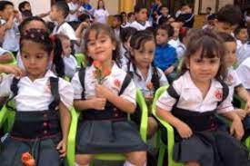

Un espacio para crecer, explorar y descubrir el mundo, mediante el desarrollo integral de las dimensiones.
Nuestros niños siempre están al cuidado de su directora de grupo con el apoyo de una practicante, velando así por su bienestar.
Tenemos un especial énfasis en el desarrollo de la corporalidad (Ed. Física), la motricidad (Artística), la exploración (Laboratorios de ciencia), la comunicación (Inglés) y el acercamiento al mundo virtual (tecnología), gracias a la intervención de varios docentes expertos en estas habilidades.

primaria
A partir del grado primero se maneja profesorado, esto nos permite que cada docente sea experto en su área, además de enriquecer el crecimiento de los estudiantes, ya que logran encontrarse con diversas metodologías. No te preocupes: Al ingresar a la institución, se hace todo un trabajo gradual para que los niños vayan lentamente incorporándose a la jornada y dinámica académica.
bachillerato
Nuestro modelo pedagógico integrador favorece el aprendizaje de competencias a partir de las actividades integradoras que se planean desde diferentes áreas, asimilando el conocimiento como un todo. Para nosotros es de gran importancia el fortalecimiento del inglés, por lo tanto, tenemos una intensidad horaria semanal de 4 horas desde 1° a 11° con el apoyo de Richmond Solutions ®